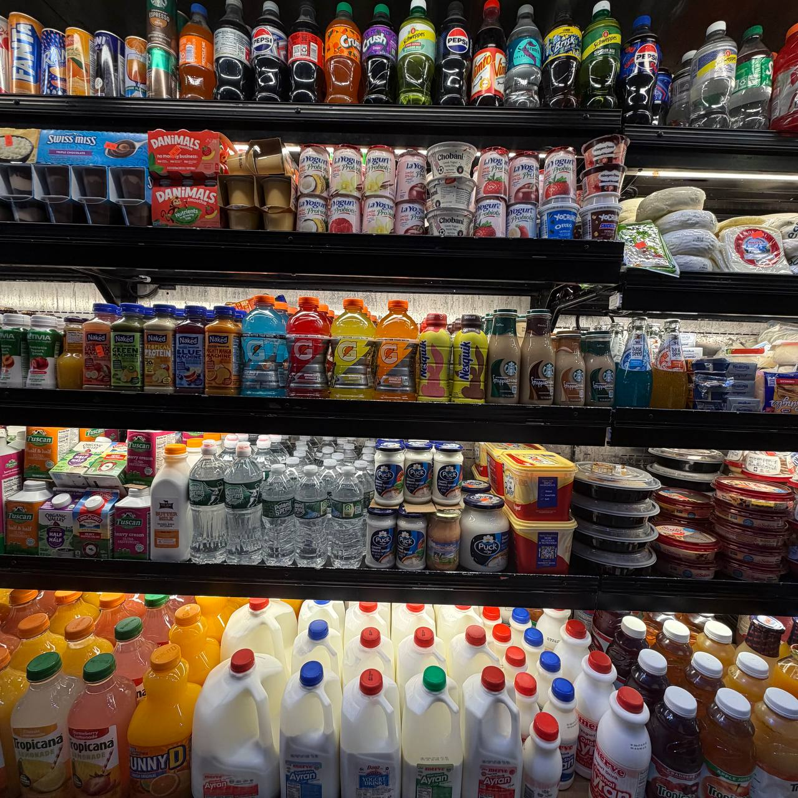

Policies
Legal & policies.
The documents that govern orders, your data, and how we operate.

Terms of Service
These terms govern your use of the Tazza Produce website and any online orders you place. By placing an order you agree to pay the listed price, including any applicable taxes, and to collect your order from 302 86th St, Brooklyn, NY 11209 during open hours. Online orders are prepared for pickup; product availability may change without notice based on daily stock, and prices shown online are estimates with the in-store total at pickup final. The store may refuse, substitute, or cancel any order, including for mispricing, unavailable items, or suspected fraud. No-shows not collected within 24 hours of the agreed pickup window may be cancelled and refunded less a restocking fee at our discretion.
These terms are governed by the laws of the State of New York, and any dispute shall be resolved exclusively in the state or federal courts located in Kings County, New York. Tazza Produce is not liable for indirect, incidental, or consequential damages, and our total liability for any order is limited to the amount paid. Contact us at +1 718-333-5019 for any dispute resolution.
Privacy Policy
We collect only the information needed to fulfill your order: name, contact details, and order contents. Payment details are handled directly by Stripe, our third-party payment processor, and are never stored on our servers. When you pay through Stripe you provide card and billing data to Stripe under their own privacy policy; we receive only confirmation that payment succeeded.
Contact form submissions are used to reply to your message and are not shared with third parties except as required to process an order or as required by law. We do not sell your data. You may request deletion of your submitted information by emailing our contact address.
Refund Policy
If an item is incorrect or not to standard, contact us within 24 hours of pickup at +1 718-333-5019 for a replacement or refund. Perishable goods (meat, produce, dairy) are assessed on a case-by-case basis. Refunds for online payments processed through Stripe are returned to the original payment method where applicable.
Orders cancelled before preparation are refunded in full. We reserve the right to deny refunds where policy abuse is suspected.
Accessibility
We aim to meet WCAG 2.2 AA. The site supports keyboard navigation, visible focus states, sufficient color contrast, and respects reduced-motion preferences. The store is accessible at street level. Feedback on accessibility is welcome at hello@tazzaproduce.example.
Licenses & Certifications
Tazza Produce is licensed by the NYC Department of Health and Mental Hygiene. Halal products are sourced from named certifiers; supplier certificates are kept on file and available on request.
This is a design mockup. Final policies should be reviewed by a New York-licensed attorney before launch.